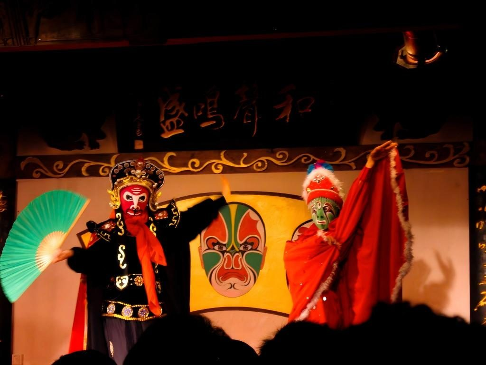

川剧

川剧是巴蜀地区的地方戏，五种声腔合流，锣鼓一响，戏就开了。
变脸：川剧的"绝活"
变脸用来表现人物情绪的骤然翻转——惊、怒、惧，一瞬间换一张脸。手法主要有抹、吹、扯几种， 演员在转身、甩袖、亮相的空当里完成，快到观众来不及看清。
台上还有什么
| 元素 | 一句话 |
|---|---|
| 变脸 | 情绪的外化，川剧最出圈的一张名片 |
| 吐火 | 口中喷出火焰，多用于神怪与激烈场面 |
| 帮腔 | 后台帮唱，替角色说出心里的潜台词 |
| 锣鼓 | 小鼓、堂鼓、大锣，控制全场的节奏 |
| 行当 | 生、旦、净、末、丑，各有各的唱做念打 |
第一次看戏怎么选
不用一上来就看全本大戏。挑一出折子戏，比如《秋江》，情节清楚、身段好看， 二十分钟就能感受到川剧的节奏。重庆的茶馆、剧场里常有这样的专场。
看戏建议：坐靠中间偏后的位置，能同时看清脸和身段。